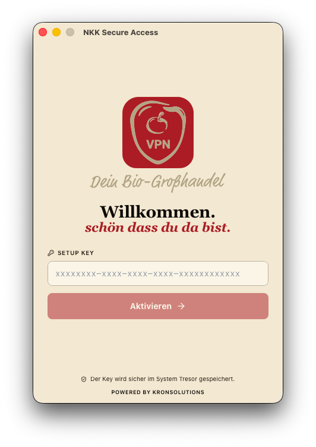
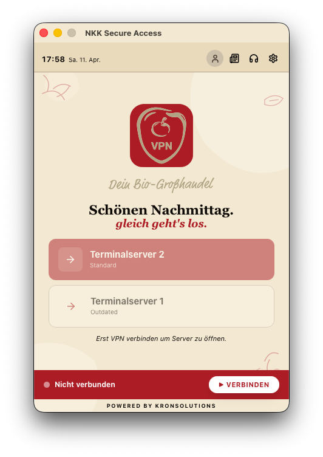
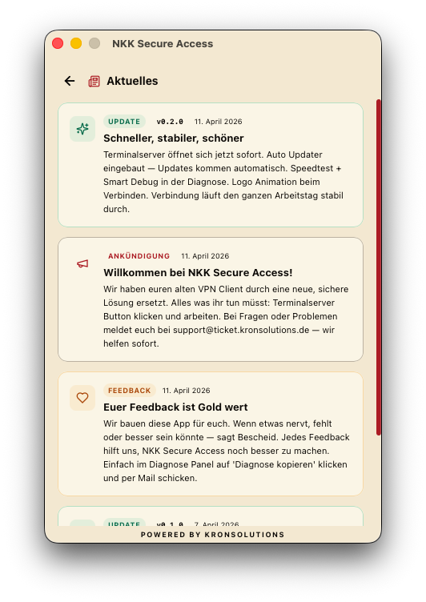
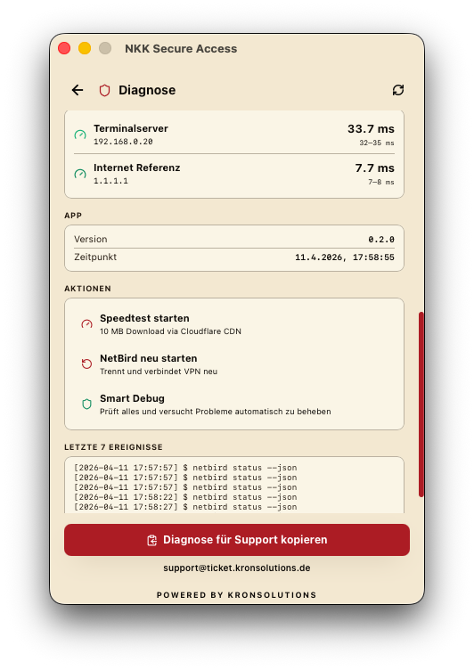
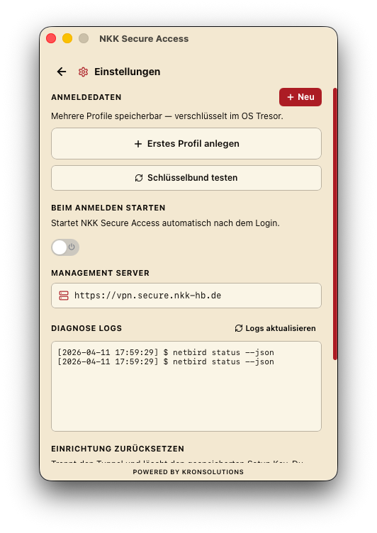

Installation
ZIP entpacken
Öffne die Datei NKK-Secure-Access.zip aus der Mail.
Das Passwort lautet: nkk (kleingeschrieben).
Installer starten
Doppelklick auf NKK Secure Access Setup.exe und den Installer durchklicken.
Windows zeigt eine blaue Warnung?
Klicke auf „Weitere Informationen" (kleiner blauer Text), dann auf „Trotzdem ausführen". Das kommt nur beim allerersten Mal.
App öffnen & Schlüssel eingeben
Im Startmenü unter KronSolutions → NKK Secure Access die App starten. Den Schlüssel aus der zweiten Mail eingeben und auf Aktivieren klicken.

Fertig — Arbeiten!
Klicke auf Terminalserver 2 — dein gewohnter Arbeitsplatz öffnet sich sofort.
Geschafft!
Ab jetzt reicht ein Klick auf den Terminalserver Button. Die grüne Leiste unten zeigt: Verbindung steht.
So sieht die App aus

Hauptbildschirm
Euer täglicher Startpunkt. Alles auf einen Blick:
- Terminalserver 2 — euer Standard Arbeitsplatz
- Terminalserver 1 — für Spezialanwendungen
- Statusleiste unten — grün = verbunden, rot = getrennt
- Uhrzeit & Datum oben links

Aktuelles & Neuigkeiten
Über das Zeitungs-Icon oben rechts seht ihr:
- Aktuelle Ankündigungen von KronSolutions
- Updates mit Änderungsliste
- Möglichkeit Feedback zu geben

Diagnose & Support
Über das Headphones-Icon erreichbar. Zeigt euch:
- Verbindungsqualität mit Ping Werten
- Speedtest auf Knopfdruck
- Smart Debug — prüft und repariert automatisch
- Diagnose kopieren — alles in einem Klick an den Support schicken

Einstellungen
Über das Zahnrad-Icon erreichbar:
- Anmeldedaten speichern (verschlüsselt)
- Autostart bei Windows Login (optional)
- Diagnose Logs für den Support
Tipps & Hinweise
Autostart
Die App startet nicht automatisch. Falls gewünscht: Einstellungen → „Beim Anmelden starten" aktivieren.
Updates
Updates kommen automatisch. Es erscheint einfach eine kurze Meldung — nichts manuell machen.
Tray Icon
Das rote NKK Symbol lebt unten rechts in der Taskleiste. Rechtsklick für Schnellzugriff.
Statusleiste
Grün = verbunden und bereit. Rot = bitte auf „Verbinden" klicken.
Häufige Fragen
Die Verbindung bricht ab
Die Statusleiste unten wechselt von Grün auf Rot.
Der Terminalserver reagiert nicht
Klick auf „Terminalserver 2" passiert nichts.
Ich habe meinen Schlüssel vergessen
Der Schlüssel wird nur einmal benötigt und dann gespeichert.
Die App startet nicht
Beim Öffnen passiert nichts.